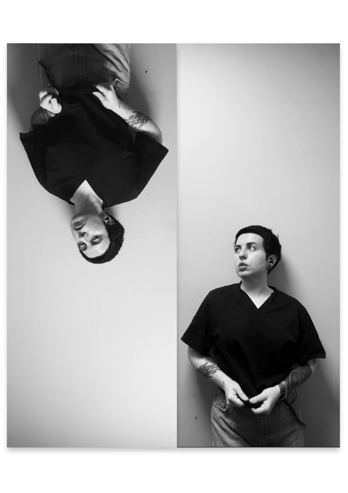

nika sŭr-mã
nika sŭr-mã is a media and sound artist working between fulldome film, projection mapping, AR and multichannel sound installation. She builds spaces in which an error, a repetition or a trace becomes the material of the work rather than its failure.
Her practice moves between generative graphics and sound synthesis: TouchDesigner and Blender for image, MAX/MSP and Ableton Live for sound, diffusion models for material that is neither photographic nor drawn. Recent work has been shown at ДЕЛЬТА’n, D/G/TAL RA/N, Night of Light in Gatchina, Dom Radio, AIR ITMO and the Krasnokholmskaya Gallery in Moscow.
nika sŭr-mã — медиа- и саунд-художница, работает между купольным кино, видеомэппингом, AR и многоканальной звуковой инсталляцией. Строит пространства, в которых ошибка, повтор или след становятся материалом работы, а не её сбоем.
Практика движется между генеративной графикой и синтезом звука: TouchDesigner и Blender — для изображения, MAX/MSP и Ableton Live — для звука, диффузионные модели — для материала, который не является ни фотографией, ни рисунком. Последние работы показывались на ДЕЛЬТА’n, D/G/TAL RA/N, «Ночи света» в Гатчине, в Доме радио, AIR ИТМО и Краснохолмской галерее в Москве.
Selected worksИзбранные работы
ContactКонтакты
Contact details to be added — set EMAIL in build.py and rebuild.Контакты будут добавлены — укажите EMAIL в build.py и пересоберите сайт.